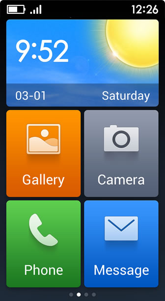
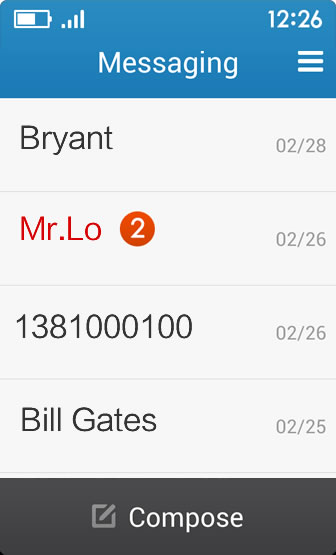
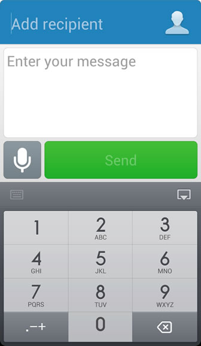
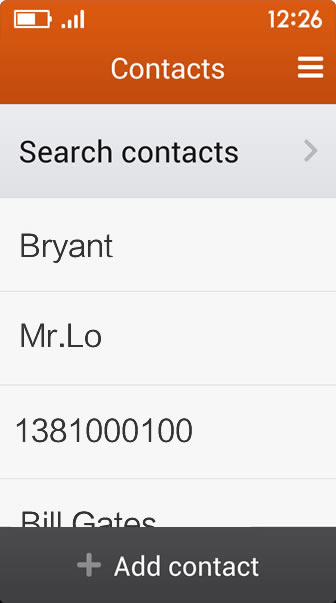

Operasi asas
- Sentuh dan leret
Sentuh item untuk membukanya atau mencetuskan fungsinya. Untuk leret, gerakkan jari anda dengan cepat di seluruh permukaan skrin. Gerak isyarat leret sering digunakan untuk mengemudi antara skrin. - Tekan lama dan seret
Tekan lama item pada skrin dengan menyentuhnya dan tidak mengangkat jari anda sehingga ia bertindak balas. Untuk menyeret item, sentuh & tahan ia seketika dan kemudian, tanpa mengangkat jari anda, gerakkan jari anda merentasi skrin sehingga anda mencapai kedudukan sasaran anda.
Skrin Utama

- Unrtuk lihat app berlainan pada Skrin Utama anda, leret ke kiri atau kanan.
- Untuk buka app, sentuh icon yang sepadan pada Skrin Utama anda.
Telefon

- Log panggilan
Panggilan terlepas ditonjolkan dalam warna merah.
Untuk lihat maklumat kenalan, sentuh nama kenalan tersebut.
Untuk buat panggilan, sentuh ‘Dail’.

- Pilih dan simpan kenalan
Di skrin pad dail, sentuh ‘Simpan’ untuk simpan nombor yang telah dimasukkan.
Mesej

- Mesej
Mesej belum dibaca ditonjolkan dalam warna merah.
Untuk lihat mesej daripada kenalan anda, sentuh nama kenalan tersebut.
Untuk menulis mesej, sentuh ‘Mesej baru’.

- Perbualan
Untuk tambah saiz tulisan mesej, sentuh ia.
Untuk mesej dibaca kepada anda, sentuh icon Pembesar Suara.

- Menulis mesej
Sentuh 'Mesej baru', masukkan nmbor telefon penerima atau pilih nombor dari kenalan anda, kemudian tulis atau rakam mesej anda.
Kenalan

- Cari kenalan
Anda boleh cari kenalan menggunakan huruf pertama nama mereka.

- Menambah kenalan baru
Masukkan nama kenalan anda, kemudian masukkan nombor telefon mereka di bawah.